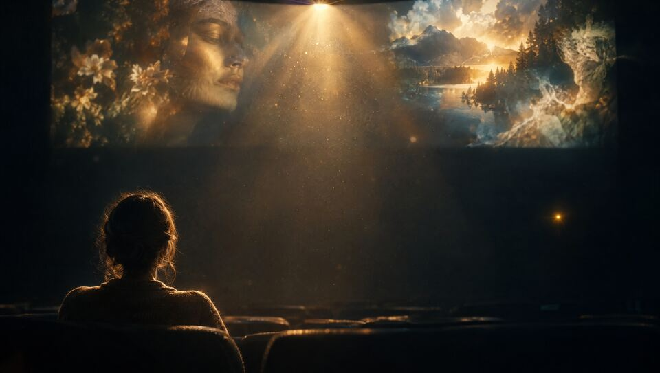
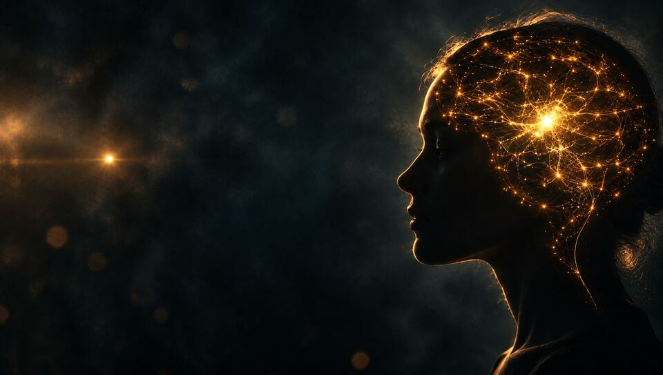
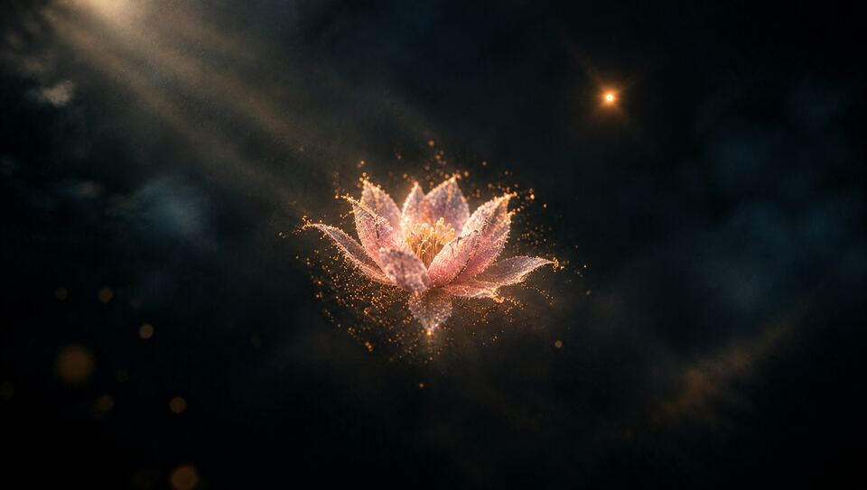
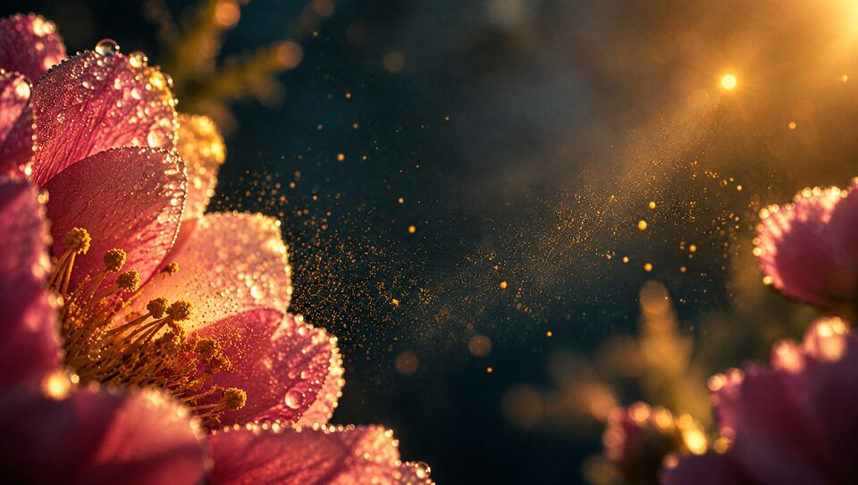
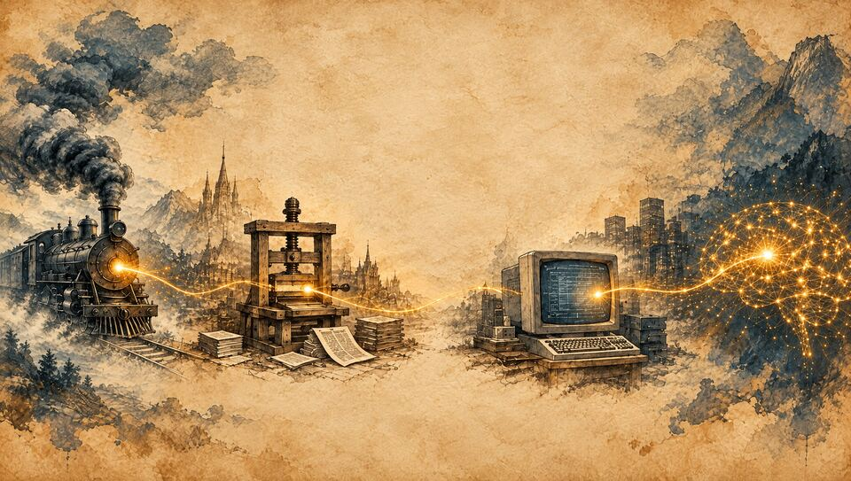
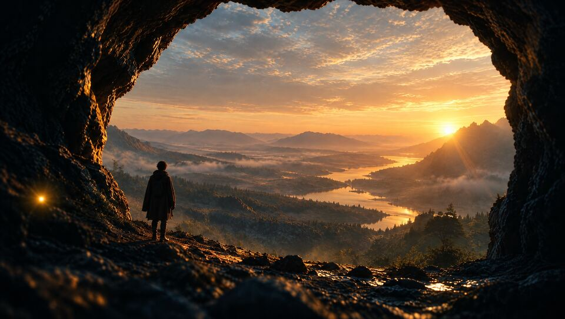
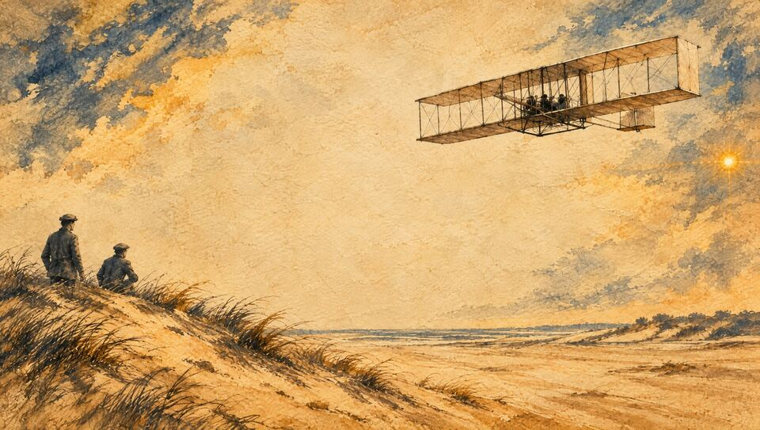
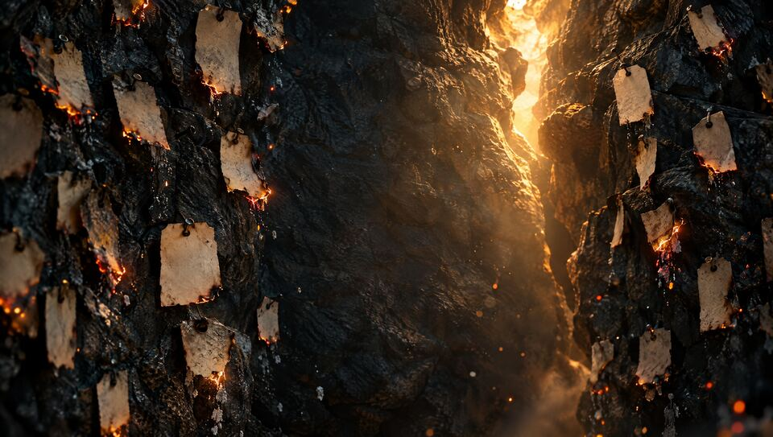
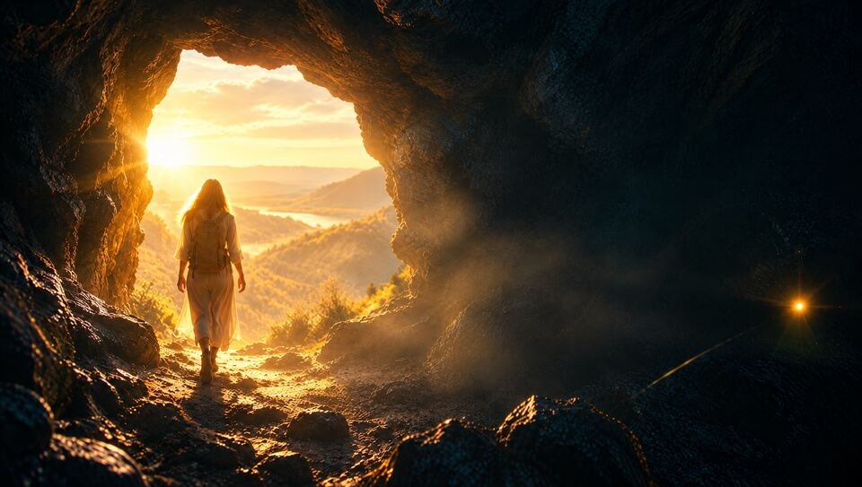

מטקסט ליצירה
תאריך: 15 באוקטובר 2026
איך לוקחים טקסט קיים, מאמר, פסוק, שיר או הרצאה, ומחיזים אותו לסרטון יצירתי, אותנטי ומעורר מחשבה. שתי דוגמאות, תהליך עבודה מלא, והכלים שאיתם אפשר לעשות את זה בחינם.
היי לכולם,
הנה כל מה שדיברנו עליו במפגש, במקום אחד. הרעיון המרכזי: כל סרטון שאנחנו יוצרים הוא פתח וחלון לשיח ולדיון. הטקסט הוא חומר הגלם, ואנחנו, כיוצרים, כאמנים וכמנהיגים, בוחרים איזו חוויה ליצור ממנו.
מה תמצאו בדף:
- המשימה למפגש הבא: להפוך את הטקסט שלכם לסרטון קצר, אותנטי ואישי
- בחירת טקסט: מה הופך טקסט לחומר טוב לסרטון, ומה אפשר לעשות איתו
- דוגמה 1, אפוק: איך מאמר ארוך הופך לסרטון של שתי דקות
- דוגמה 2, בראשית: איך מחיזים טקסט מקראי
- דוגמה 3, הטקסט שלי: "כוח הדמיון והיציאה מהמערה", ומאחורי הקלעים של הפריימים
- להמחיז בטקסט בלבד: הדרך הכי ישירה להפוך טקסט אישי לסרטון
- התהליך, צעד אחר צעד: מהטקסט, דרך התסריט והסטוריבורד, ועד התמונות והסאונד, עם פרומפטים מוכנים להעתקה
- ארגז הכלים של השיעור, כולל NotebookLM
שאלות? אני כאן. בהצלחה,
שגיא
ליצור: להפוך את הטקסט שלכם לסרטון
בחרו טקסט: הרצאת המשנה שלכם, שיר שכתבתם, פסוק שמלווה אתכם. כל טקסט אמיתי ואישי מתאים. והפכו אותו לסרטון קצר, אותנטי ואישי.
הבסיס: סרטון של טקסט בלבד. המילים שלכם על המסך, בקצב שלכם, ואם תרצו גם עם הקול שלכם קורא אותן. איך עושים את זה
ומי שרוצה להמשיך: מוסיפים תמונות, לפי התהליך שבדף. או לפחות פריים אחד, תמונה אחת שמחיזה משפט מהטקסט שלכם.
אפשר ליצור ב-Google Vids, כמו שלמדנו בתחילת הדרך, או ב-CapCut.
המטרה היא לא סרטון מושלם. המטרה היא לעבוד יותר יעיל, יותר יצירתי ויותר אותנטי, עם הכלים שכבר יש לנו.
תזכורת קצרה: העלאה ליוטיוב
נכנסים ל-studio.youtube.com, לוחצים Create ואז Upload videos. בשפת הסרטון בוחרים עברית, מעלים כ-Unlisted, ומתקנים את הכתוביות ב-Subtitles.
בחירת טקסט
במפגש הקודם ביקשתי מכם לבחור טקסט אישי ועוצמתי. עכשיו השאלה היא מה עושים איתו. אותו טקסט יכול להפוך לסרטונים שונים לגמרי, לפי מה שאנחנו בוחרים לעשות איתו.
לתמצת
לוקחים הרבה טקסט, ומזקקים ממנו את הרעיון המרכזי לסרטון של דקה או שתיים.
להמחיז
הופכים מילים לתמונות, לתנועה ולסאונד. הטקסט נשאר, ומקבל חוויה סביבו.
להתאים לזמן ולמקום
טקסט ישן יכול לדבר על היום. השאלה היא מה הוא אומר לנו עכשיו, ולמי.
מה אנחנו מחפשים בסרטון?
שיהיה יצירתי, אותנטי ומעניין. שיהיה חוויה עבור הצופה, ושיעורר מחשבה והשראה. וכשהוא נגמר, שיפתח שיחה. כאן כבר נוגעים באמנות ובפילוסופיה: מה היצירה שאנחנו מביאים למסך או לבמה, ואילו רעיונות היא מביאה איתה.
אפוק: ממאמר ארוך לשתי דקות
הטקסט: כתבה שמעלה רעיון חדש, שאולי מקורה של מחלת האלצהיימר לאו דווקא במוח. המטרה: לקחת הרבה טקסט, ולהציג את הרעיון בשתי דקות, כך שהצופה ירצה לקרוא את הכתבה המלאה.
תרגיל צפייה
צפו בסרטון, ונסו לזהות ממה הוא עשוי. אילו אלמנטים יש בו? ברמה הכי פשוטה: מה רואים, מה שומעים, ומה קורא על המסך.
ממה הסרטון עשוי? (לפתוח אחרי הצפייה)
- צילום: אני מדבר מול מצלמה, על רקע מסך ירוק, כדי שאפשר יהיה להחליף את הרקע
- איורים: נוצרו בכלי תמונה כמו Nano Banana או ChatGPT
- טקסט על המסך: כותרות ומילות מפתח שמחזקות את מה שנאמר
- מוזיקה: שכבת סאונד שמחזיקה את הקצב. עליה נרחיב במפגשים הבאים
איך הוא נבנה
את כל הסרטון בניתי עם Claude Code ועם CapCut. Claude Code הוא כלי מתקדם ובתשלום שאני משתמש בו מאחורי הקלעים.
את אותם שלבים בדיוק אפשר לעשות בכלים חינמיים: תסריט ב-Claude, ב-ChatGPT או ב-Gemini, איורים ב-Nano Banana, ועריכה ב-CapCut.
בראשית: להמחיז טקסט מקראי
בחרתי בבראשית, פרק א', בדיוק כשאנחנו עוברים לפרשת נח: מבריאת העולם ועד בריאת האדם, בפסוק כ"ז. זה טקסט עוצמתי, עם הרבה רבדים, וכל אחד מהם יכול לפתוח דיון. ובגלל שהוא כל כך מוכר, חשוב במיוחד לבקש מהכלי את הטקסט המדויק והמלא, ולבדוק אותו.
ויברא אלהים את האדם בצלמו, בצלם אלהים ברא אתו, זכר ונקבה ברא אתם.
בראשית א', כ"ז
בחירת סגנון: אותה סצנה, שמונה חוויות
לפני שיצרתי את הסרטון, ביקשתי את אותה סצנה, אדם שנברא ומושיט יד אל האור, בסגנונות שונים. כל סגנון מספר סיפור אחר. בחרתי בפלסטלינה, כי זה עניין אותי והיה קצת אחר. עלה לי גם כיוון אחר לגמרי, של אור וצל, יותר מופשט, כמעט ריקוד. מקום שעוד לא ראיתי.


התמונות נוצרו ב-Higgsfield. את אותו תרגיל בדיוק אפשר לעשות בחינם ב-Nano Banana או ב-ChatGPT: פרומפט אחד, ומשנים רק את שם הסגנון.
הנפשה
אחרי שיש תמונות, אפשר להפיח בהן חיים. מעלים את התמונה ל-Kling, מתארים במילים איזו תנועה רוצים, ומקבלים קליפ קצר. כאן ביקשתי תנועה בסגנון סטופ-מושן, כאילו הפלסטלינה זזה פריים אחרי פריים.
הגרסה החינמית של Kling נותנת קרדיטים יומיים, עם סימן מים.
הטקסט שלי: "כוח הדמיון והיציאה מהמערה"
הדוגמה השלישית היא טקסט אישי: הרצאה קצרה שלי. הרעיון שבה: הדמיון אינו בריחה מהמציאות, הוא מערכת ההפעלה שלנו, והכלי שממנו נולדה כל מהפכה אנושית. את שתי הדקות האחרונות של ההרצאה הפכתי ל-14 פריימים, משפט אחרי משפט.









מאחורי הקלעים: חמישה לקחים ליצירת תמונות
מגדירים סגנון פעם אחת
משפט סגנון קבוע שמודבק בסוף כל פרומפט, ושומר על אחידות בין 14 תמונות שונות.
סמל חוזר
ניצוץ זהוב קטן מופיע בכל פריים. הוא מחבר בין רעיונות רחוקים, ממערה ועד עיר עתידית.
סקיצה לפני גימור
קודם יוצרים את כל הפריימים באיכות נמוכה וזולה, בודקים אותם יחד, ורק את מה שעובד מייצרים באיכות גבוהה.
מתקנים במילים פשוטות
שני פריימים לא עבדו בפעם הראשונה. ניסוח מחדש, ברור ומפורש, תיקן אותם.
אומרים גם מה לא
"בלי טקסט בתמונה": את הכיתוב מוסיפים בעריכה. ובלי פנים לדמויות היסטוריות.
משפט הסגנון הקבוע שהשתמשתי בו (לפריימים הריאליסטיים)
Cinematic photorealistic film still, 35mm anamorphic look, deep charcoal-blue shadows with warm amber-gold light, soft volumetric haze, shallow depth of field, subtle film grain. A small warm glowing spark of golden light is present in the frame. Calm empty negative space in the middle of the frame for overlaid typography. No text, no letters, no logos, no watermark.
מוסיפים לפני המשפט הזה תיאור קצר של מה שרואים בפריים, ומקבלים סדרה של תמונות שנראות כמו סרט אחד.
להמחיז טקסט בטקסט בלבד
לא חייבים תמונות כדי ליצור סרטון חזק. לפעמים המילים לבדן הן החוויה: משפט שמופיע לאט על מסך שקט, מילה אחת שנשארת, ושקט שמאפשר לה לחלחל. זו הדרך הכי ישירה להפוך טקסט אישי, כמו הרצאת משנה, לסרטון אותנטי ואישי. הטקסט שלכם, הקצב שלכם, ואולי גם הקול שלכם.
1. מזקקים
בוחרים את המשפטים החזקים. לא כל ההרצאה, רק מה שחייב להישאר. 8 עד 12 משפטים מספיקים לסרטון של דקה או שתיים.
2. מחליטים מה על המסך
לא חייבים את כל המשפט. לפעמים מספיקה מילת מפתח אחת, כשהקול אומר את השאר. רקע אחד, פונט אחד, צבע אחד.
3. נותנים קצב
מקליטים את עצמכם קוראים, ומתזמנים כל משפט לקול. או בלי קול, עם מוזיקה שקטה ומספיק זמן לקרוא.
פרומפט: מטקסט לסרטון של מילים
זה טקסט שכתבתי: [הדביקו כאן את הטקסט] אני רוצה להפוך אותו לסרטון של דקה וחצי, שכולו טקסט על מסך, בלי תמונות. בחר 8 עד 12 משפטים שהם לב הטקסט, בלי לשנות את המילים שלי. לכל משפט כתוב: מה יופיע על המסך (המשפט או מילת מפתח ממנו), וכמה שניות הוא יישאר. הצע גם צבע רקע, סגנון פונט ואווירה למוזיקה שמתאימים לטקסט.
את התוצאה בונים ב-Google Vids או ב-CapCut: שקופית אחת לכל משפט, ומעבר רך ביניהן.
 דוגמה לסרטון שכולו טקסט: "נזכור", בדף של שיעור 5. מילים ומוזיקה, בלי מילה אחת של קריינות.
דוגמה לסרטון שכולו טקסט: "נזכור", בדף של שיעור 5. מילים ומוזיקה, בלי מילה אחת של קריינות.
התהליך, צעד אחר צעד
כך נבנה סרטון מטקסט. שבעה שלבים, והכלי שאפשר לעשות איתו כל אחד מהם.
בחירת טקסט
איפה ההתחלה, האמצע והסוף? מה הנושא שלנו?
תסריט
Claude · ChatGPT · Gemini
הטקסט המדויק והמלא, בלי קיצורים. ובודקים.
סטוריבורד
כמו קומיקס: לכל פריים יש מלל ותמונה.
בחירת סגנון
עיפרון, צבע, טושים, ריאליסטי, סוריאליסטי, פלסטלינה.
יצירת תמונות
Nano Banana · ChatGPT
פרומפט מכל פריים בסטוריבורד.
הנפשה
Kling
התמונה מקבלת תנועה, לפי תיאור במילים.
סאונד
Suno · ElevenLabs
השכבה האחרונה: מוזיקת רקע וכלי נגינה.
פרומפטים מוכנים להעתקה
מחליפים את מה שבסוגריים המרובעים בטקסט שלכם. עובד ב-Claude, ב-ChatGPT וב-Gemini. כל אחד ימצא את הסביבה שנכונה לו.
מטקסט לתסריט
זה הטקסט שבחרתי: [הדביקו כאן את הטקסט] חלק אותו להתחלה, אמצע וסוף, וכתוב במשפט אחד מה הנושא המרכזי שלו. אחר כך הפוך אותו לתסריט לסרטון של דקה אחת. חשוב: השתמש בטקסט המדויק והמלא, בלי קיצורים ובלי שינויים.
מתסריט לסטוריבורד
הפוך את התסריט לסטוריבורד: טבלה שבה כל שורה היא פריים. בכל שורה: מספר הפריים, הטקסט שנשמע או מופיע בו, ומה רואים בתמונה. פריים אחד לכל משפט או פסוק.
מפריים לתמונה
צייר את הפריים הזה בסגנון [פלסטלינה / עיפרון / צבעי מים / צילום ריאליסטי], ביחס 16:9: [התיאור של הפריים מהסטוריבורד]
ואפשר גם הכי פשוט: לכתוב "תצייר את הציטוט הזה", להדביק את הפסוק, ולראות מה קורה.
 טיפ: אחרי שהתסריט מוכן, תמיד בדקו אותו מול המקור. במיוחד בטקסט מקראי או בציטוט, כל מילה חשובה.
טיפ: אחרי שהתסריט מוכן, תמיד בדקו אותו מול המקור. במיוחד בטקסט מקראי או בציטוט, כל מילה חשובה.
ארגז הכלים של השיעור
לא חייבים לשלם על כלום. ואפשר גם פשוט לקחת דף ועיפרון ולצייר בעצמכם. לחצו על כרטיס כדי לפתוח את הכלי.
מטקסט לתסריט ולסטוריבורד. בו אני עובד, וכל אחד יכול לבחור את הסביבה שלו.
תסריט וסטוריבורד, וגם יצירת תמונות מהפרומפט.
כתיבה ב-Gemini, ויצירת תמונות מהסטוריבורד ב-Nano Banana, באותו מקום.
מעלים מקורות, מאמר, קובץ או קישור, ושואלים עליהם שאלות. מקבלים סיכום ותובנות שמבוססים רק על המקורות שלכם.
הנפשה: מעלים תמונה, מתארים תנועה, ומקבלים קליפ קצר.
פלטפורמה שמרכזת כמה מודלים של תמונה ווידאו. בה יצרתי את התמונות לבראשית ולהרצאה.
עריכה: מחברים את התמונות, הטקסט והסאונד לסרטון אחד.
אפשר ליצור בו את כל הסרטון, כמו שלמדנו בתחילת הקורס.
מוזיקת רקע או שיר מתיאור במילים. נרחיב על מוזיקה במפגשים הבאים.
הקראה בקול טבעי, אפקטים קוליים ומוזיקה.
ספריית מוזיקה ואפקטים מקצועית, עם רישיון לשימוש ברשתות.